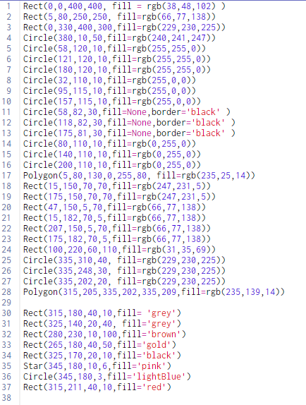

CMU
In CMU Acdemy we learned to make all sorts of designs and images using python
Here is one of the images I created with my class mates alongside the code


CodeHS
CodeHS was where we learned most of our python during the course. It was an amazing resource that was able to simplify coding

Replit
At the beginning of the semester, replit was the first IDE (integrated development environment) we used in class.
An IDE is a software that allows developers (like me) to make code

GitHub
Later in the semester we changed to GitHub which was also an IDE like replit
The major difference between the two is that in GitHub you can download extensions that help you with your code.

VSCode
Finally vscode is the last IDE we used this semester and is the one being used to code this website.
its almost the same to github interms of the user interface and its accessibilities